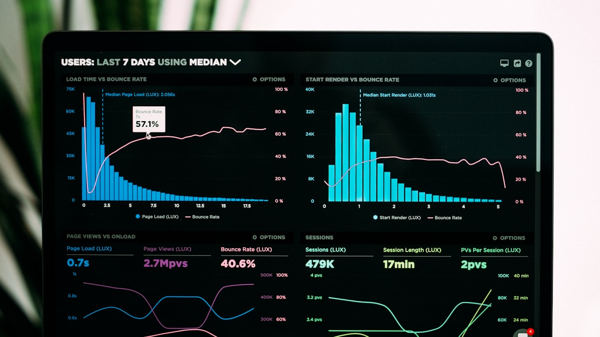

Affichage Dynamique
📅 18/08/2026 • 11:20
Affichage Dynamique au Maroc : Étude de cas et stratégie pas à pas pour doubler son taux de conversion au Maroc
Découvrez comment optimiser vos leviers de Affichage Dynamique au Maroc en 2026. Guide stratégique complet avec métriques ROI et conseils d'experts DatRey.
Lire l'article →